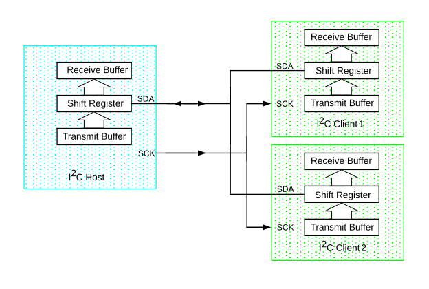

The I2C module provides a synchronous serial interface between the microcontroller and other I2C-compatible devices using a bidirectional two-wire bus. Devices operate in a host/client environment that may contain one or more host devices and one or more client devices. The host device always initiates communication.
The I2C bus consists of two signal connections:
Both the SCL and SDA connections are open-drain lines, each line requiring pull-up
resistors to the application’s supply voltage. Pulling the line to ground is considered
a logic ‘0’, while allowing the line to float is considered a logic
‘1’. It is important to note that the voltage levels of the logic
low and logic high are not fixed and are dependent on the bus supply voltage. According
to the I2C Specification, a logic low input level is up to 30% of
VDD (VIL ≤ 0.3 VDD), while the logic high input
level is 70% to 100% of VDD (VIH ≥ 0.7 VDD). Both
signal connections are considered bidirectional, although the SCL signal can only be an
output in Host mode and an input in Client mode.
All transactions on the bus are initiated and terminated by the host device. Depending on the direction of the data being transferred, there are four main operations performed by the I2C module:
The I2C interface allows for a multi-host bus, meaning that there can be several host devices present on the bus. A host can select a client device by transmitting a unique address on the bus. When the address matches a client’s address, the client responds with an Acknowledge (ACK) condition, and communication between the host and that client can commence. All other devices connected to the bus must ignore any transactions not intended for them.
The following figure shows a typical I2C bus configuration with one host and two clients.
